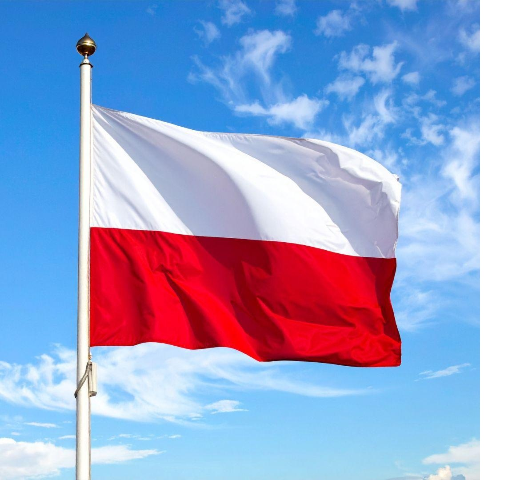

11 listopada - wazny dzien dla Polski
Narodowe Swieto Niepodleglosci obchodzimy 11 listopada. Upamietnia ono odzyskanie przez Polske niepodleglosci w 1918 roku po 123 latach zaborow.
W calym kraju organizowane sa marsze, uroczystosci patriotyczne oraz koncerty. Ludzie wywieszaja polskie flagi i nosza bialo-czerwone kotyliony.
Jest to dzien, w ktorym przypominamy sobie o historii Polski i poswieceniu ludzi walczacych o wolnosc.
Polska odzyskala niepodleglosc w 1918 roku po 123 latach zaborow.

Dzien dumy narodowej i pamieci o historii Polski.
Autor: Jan Kowalski | 2026